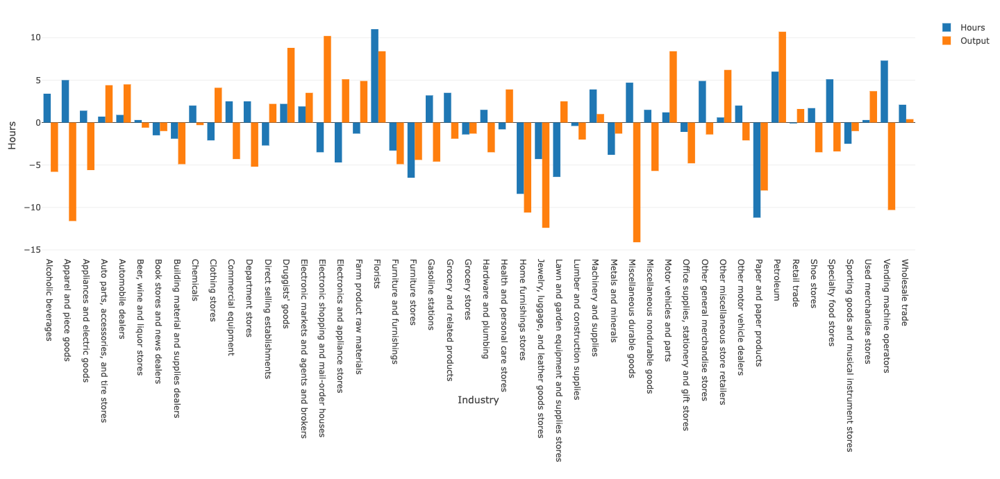
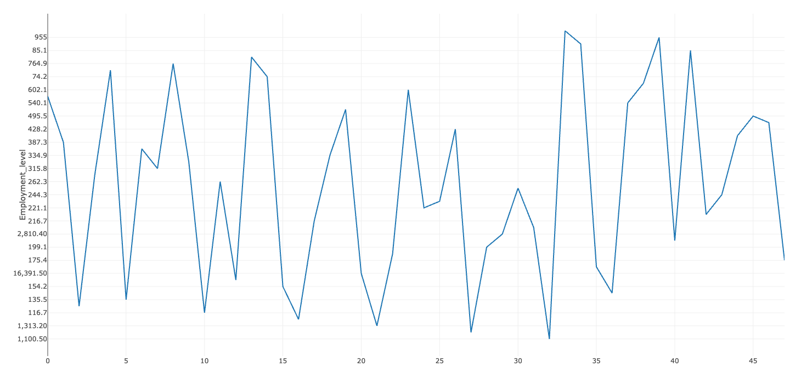

Project Details 2
Original data visualization:
The data used for the analysis and visualizations in this report have been sourced from the U.S. Bureau of Labor Statistics (BLS).
Bubble Chart Representation: It displays a bubble chart with each bubble standing in for an industry and each bubble’s size indicating the employment level. The axes show the output (Y-axis) and the percent change in hours (X-axis).
Problems in the Bubble plots:
- Complexity: With so many bubbles, the chart could be too much to handle. It is challenging to compare the performance of each industry with clarity due to the abundance of data points.
- Data Overlap: Several bubbles are grouped together in the center, making it difficult to discern between industries that have comparable data points.
- Difficulties in Interpretation: It is challenging to rapidly interpret data because of the combination of axes, color coding, and bubble size. When compared to shifts in hours and output, people might find it difficult to comprehend the significance of the bubble sizes.
Modified visualizations:
In this data set, the data include employment levels, hours, output according to the industry. Where Output and hours data are in decimals but employment level data has large data. This makes data visualization over complicated. So we use
Bar chart:

- Clarity and Simplicity: Two bars, one for hours worked and the other for output, represent each industry, making it much simpler to compare changes in hours worked and output directly within each industry. It stays clear of the confusion caused by overlapping points and bubble sizes.
- Direct Comparison: Without having to simultaneously interpret multiple variables (such as bubble size and position), you can quickly determine whether hours or output increased or decreased for each industry.
Why this is better than other plot :
We used bar chart for redesigning, As bubble chart is so clumsy, so we used bar chart for clear understanding between hours and output. In the dataset, employment data have higher number which makes the values of hours and outputs look smaller.
line chart:

Hours (Blue Line): Shows how hours have changed over time.
Output (Orange Line): This shows how the output changed in proportion over the same amount of time.
Overall Trend: It appears that both metrics are highly variable, with frequent peaks and troughs, suggesting that employment hours and productivity/output may fluctuate.
Benefits of Line Chart
Clarity and Simplicity: Without overburdening the viewer with information, a line chart provides a clearer depiction of the relationship between hours and output over time.Ease of Interpretation: Compared to the crowded bubble chart, the simpler line chart enables a quicker, more intuitive understanding of the trends.Temporal Insights: Bubble charts lack this time-based insight, whereas line charts include it, which is essential for examining how trends change over time.
In summary, simple line chart is better suited for identifying trends in hours and output, while bubble chart is overcrowded and difficult to interpret effectively, especially when dealing with multiple industries and variables simultaneously.